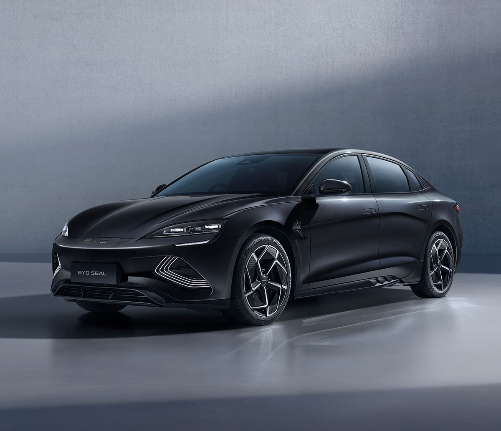

CarsOnly Indonesia
BYD Seal ditawarkan dengan harga yang kompetitif di segmen sedan listrik
premium, menjadikannya
pilihan menarik bagi konsumen yang mencari mobil listrik berkualitas.
Kenyamanan:
Dengan suspensi pintar DiSus-C dan interior yang dirancang ergonomis, BYD Seal menawarkan pengalaman
berkendara yang nyaman dan aman.
Keamanan:
BYD Seal mengutamakan keselamatan dengan berbagai fitur seperti sistem pengereman regeneratif dan
teknologi iTAC (Intelligent Torque Adaption Control) untuk distribusi torsi yang lebih
presisi.
